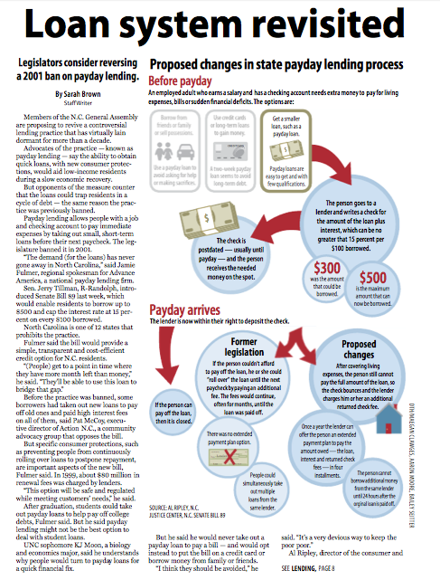

The Daily Tar Heel
The Daily Tar Heel is one of the top daily student-run newspapers in the country with 38,000 daily web/print views. I work on the Design and Graphics Desk. We are responsible for laying out front and inside pages as well as producing maps, graphics and icons to visually enrich the content. My favorit part of the job is designing larger infographics and working on long-term design projects. We are also working with the multimedia desk to make the print and web newspaper experience more cohesive.
I made this infographic to explain the complex payday loan process in North Carolina and how the proposed legislation might change it. This project was especially challenging because I only had about six hours to complete it - I received the assignment at 5 p.m. and it was due at 11 p.m. - my process included talking to the writer to understand the payday loan process, doing some research on my own, sketching design ideas, creating the design in Illustrator, and making adjustments based on reviews with my three editors. To me this project really showcases the critical thinking that a designer must do to clearly represent a concept visually.
I designed this as the cover of a special Homecoming edition of the Daily Tar Heel. It's purpose was to grab people's attention in the news stand. My goal was that both alumni and current students would recognize their campus and feel at home. This project was an exploration in using flat shapes to make a "digital" collage. I had a lot of fun overlaying different shades of green with transparency to acheive the look and feel that I envisioned. It was both challenging and intriguing to represent campus landmarks as flat, blockish cartoon images.
This is an example of an inside page that I designed. At the Daily Tar Heel, we focus on heirarchy and dominence to highlight the most important stories on the page. I also like to use directional lines and strategic photo placement to attract and guide the reader's eye. I decide which shape to pick for which story based on the other items that will go along with the story and how long it is in relation to the others. Filling a page is always an intriguing puzzle. We also have a very detailed style guide to keep our alignment and fonts consistent through the paper every day and to make the experience more enjoyable and familiar to the reader.